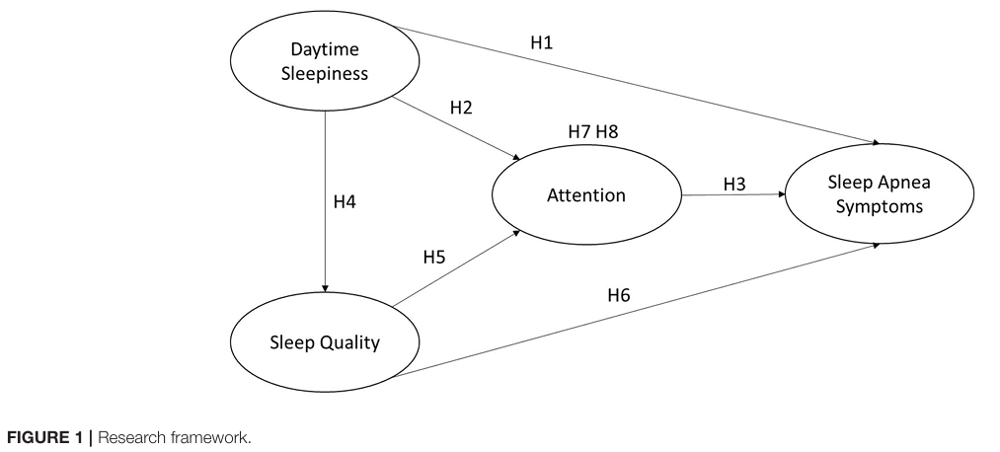
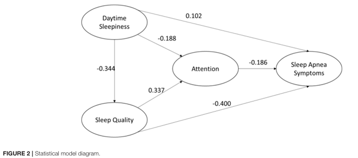
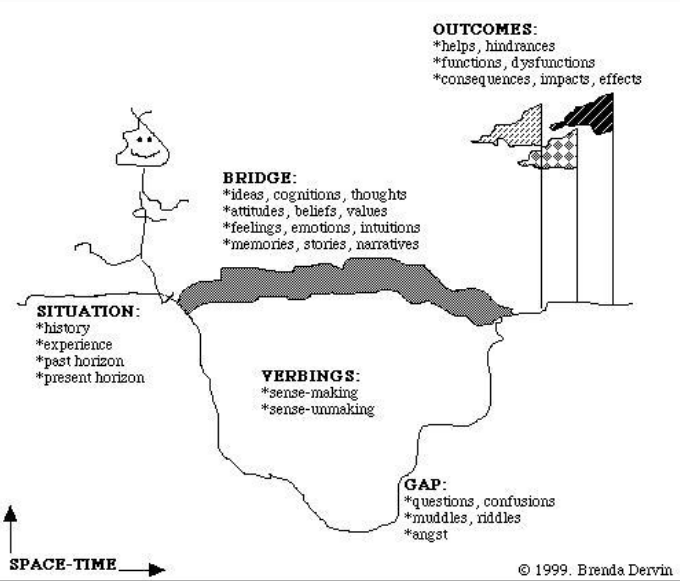

Part 2: Theoretical framework, research problem, purpose, and questions
Choosing a research problem and enunciating the preliminary research goal/question (last week).
Reviewing the literature (last week).
Defining the research framework (this week).
Finalizing and writing the research problem (this week).
Formulating the specific research questions or hypotheses (this week).
Source: Hsueh and Jong (2022)


Source: Dervin (1999)

This is your intro… which ends with/is followed by your statement of research objectives and research questions, which we cover next.
Statement that indicates the key concepts, the target population, and the action verb (e.g., explore, describe, verify, predict) that matches the type of study. (see week 2 slides for more details and examples).
The research objective/purpose/goal should be:
| Type | Nature of relationship between variables |
|---|---|
| Non-directional | The is a relationship between X and Y |
| Directional | There is a positive or negative relationship between X and Y |
| Associative | There is a non-directional or directional relationship (variable X changes when Y changes), but Y is not directly caused by X. |
| Causal | Variable X has an effect on variable Y. A change in X is the cause of a change in Y. |
| Research hypothesis | Predicts the existence of a relationship (non-directional, directional, associtive, causal) between variables. |
| Null hypothesis | Predicts the absence of a relationship (non-directional, directional, associtive, causal) between variables. |
“we examine how factors related to the tweeter (e.g., academic age, research activity, tweeting activity) and the relationship between the tweeter and the tweeted works (e.g., shared field, authors, or geographical location) may affect the probability that a researcher tweeting a paper will also cite that same paper.Specifically, our study seeks to provide answers to the following research questions:
RQ1: What is the likelihood that a researcher tweeting an academic work will also cite it?
RQ2: How are the individual characteristics of the tweeter (academic age and total number of tweets, authored works, distinct references) related to the likelihood of citing the academic work?
RQ3: How is the geographical proximity (country and institutional affiliation) of the authors of the academic work related to the tweeter?
RQ4: What is the sociotopical relationship (journal and topic) between the Tweeter’s research and the academic work? ” (Hare et al. 2024)
“This paper […] investigat[es] the coverage of gold and diamond journals in WoS and Scopus. Additionally, we seek to determine whether there is empirical support for the narrative that diamond journals are more community-driven and local in nature by analyzing the geographical and linguistic characteristics of gold and diamond journals and their relation to WoS and Scopus coverage. Further, it examines the characteristics of indexed diamond journals, such as country of publication, geographic concentration of authors, to produce a fuller portrait and subsequent understanding of how and why publications are represented in bibliometric databases. The specific research questions that we address are as follows:
1. What is the share of gold and diamond journals in the DOAJ?
2. What share of gold and diamond journals are indexed in WoS and Scopus?
3. How are diamond and gold journals distributed across regions, income groups, publishing languages, and disciplines?
4. What is the share of authorship in diamond and gold journals are indexed in WoS and Scopus?
5. How is authorship in diamond and gold journals distributed across regions, income groups and disciplines?” (Simard et al., n.d.)
“This paper aims to provide empirical evidence of the extent of English/Anglophone LIS scholarship that includes race and/or racial inequity as an area of focus. More specifically, we aim to: a) identify how the share of BIPOC-related research in LIS evolved during the 1980–2020 period; b) analyze how the research is distributed across the subareas in the field; and, c) identify the knowledge base of the research.” (Mongeon et al. 2021)
“In response to these calls, we surveyed Canadian environmental researchers’ perceived capability to conduct and disseminate research to inform decision-making and engage in effective knowledge mobilization.
Informed by the history of interference in science in Canada, we used a survey to document (1) the prevalence of interference in science for researchers in environmental studies and sciences in Canada; (2) the sources of interference; (3) its impacts on environmental researchers job satisfaction and mental health; (4) whether the experience of interference differs based on location, career stage, research area, and membership in a scientific society; and (5) whether the implementation of the scientific integrity policies in federal government has impacted researchers’ perceptions of interference” (Robertson et al. 2023)
“The purpose of this study is to empirically explore the relative contribution of primary authors, middle authors and supervisory authors to research articles in the biomedical field. More specifically we provide answers to the following research questions:
How prevalent are alphabetically ordered middle authors in biomedical research?
What are the proportions of primary, middle and supervisory authors in the articles’ bylines?
How has the overall contribution of middle authors to the biomedical literature evolved over the last 35 years?” (Mongeon et al. 2017)
“Drawing on the ACRL Framework for Information Literacy for Higher Education (Association of College & Research Libraries, 2015) and the DigComp framework (European Commission, Joint Research Centre, 2022), the study focuses on four groups of digital skills: information literacy, data literacy, visual literacy, and communication and collaboration. The study examines the differences between these four sets of digital literacy skills, which constitute student learning outcomes for higher education (Sparks et al., 2016), and their relationship to the self-assessment of psychological empowerment among recent graduates employed in the business services sector (BSS).
[…]
In this study, we draw from a practice-based understanding of digital literacy (cf. earlier discussion on information literacy) enacted through applying diverse digital skills in the digital literacy practice. As demonstrated in the preceding discussion, each of the four digital literacy courses offered by Jagiellonian University targeted a different set of digital skills. Some of these skills may align better with the requirements of BSS jobs than others and form a constituent part of BSS professionals’ digital literacy whereas others may be more peripheral. Like information literacy in Hicks and Lloyd’s (2021) outward narrative, digital literacy is conceptualized as an empowering practice. The existing literature, including the contributions from Walton and Cleland (2017), Deja, Januszko-Szakiel, et al. (2021), and Marsh (2021), focuses on specific subsets of digital literacy, leaving open the question of which skills may lead to higher or lower empowerment scores. Graduates who possess skillsets that match BSS job requirements more closely are likely to feel more empowered in the workplace than those whose skillsets do not align as well. However, the literature also does not clarify which of the four digital skillsets align with the requirements of BSS positions. Based on this reasoning, we propose the following hypothesis:
Hypothesis 1 (H1).There will be a difference in psychological empowerment scores among graduates of the four digital literacy courses.
We also aim to investigate the following research question:
RQ1.Which digital literacy courses will be associated with higher psychological empowerment scores, and which courses will be associated with lower scores?
Employability skills training, which imparts transferable competencies valued by employers (Rosenberg et al., 2012), can enhance job candidates’ empowerment (Scott et al., 2019). Analysis from Jagiellonian University has shown data processing skills lead to post-graduation psychological empowerment (Deja, Januszko-Szakiel, et al., 2021), while the link between information literacy and psychological outcomes has been well-documented (Detlor et al., 2011; Serenko et al., 2012), gaining increasing relevance. However, research on how different digital literacy aspects relate to psychological empowerment is scarce. Ochoa Pacheco and Coello-Montecel (2023) explored the impact of digital competencies on job performance, with psychological empowerment as a potential mediator, but found the model does not fully explain empowerment variances. This indicates a need for deeper investigation into how psychological empowerment mediates the relationship between digital skills and job performance, and suggests empowerment dimensions may vary with specific digital literacies. This gap underscores the necessity for further research, especially as digital skills training’s impact on empowerment’s four dimensions may differ among BSS sector graduates, who rely on specialized knowledge-based services and solutions. Therefore, our analysis will be guided by the following:
Hypothesis 2 (H2). There will be a difference in psychological empowerment scores among graduates of the four digital literacy courses across the four dimensions of empowerment.
RQ2. Among digital literacy course graduates, which dimensions of psychological empowerment will score higher, and which dimensions will score lower?
” (Deja et al. 2024)
“The aim of this paper is to explore how games, such as The Euphorigen Investigation, can support misinformation education when viewed through the sociocultural perspective, emphasizing the everyday practice and cultural context of literacy as opposed to a set of cognitive skills.
We use data from a nationwide study of the escape room to discuss the opportunities and challenges of using a sociocultural lens to assess the impact of the game. The research questions we aim to answer are: (1) How does The Euphorigen Investigation support learning about misinformation? and (2) What considerations can be derived from the sociocultural perspective for informing the design and study of misinformation MIL interventions?” (Wedlake, Coward, and Lee 2024)
“We investigate the role of HIB in view change with the aim of better supporting human agency in view formation and change and limiting the potentially negative effects of misinformation and algorithmic personalization.
We conducted qualitative, semi-structured interviews with 18 people who recently changed view on issues important to them, focusing on understanding their HIB—particularly when interacting with online information. We build on our previous work that described the information types and some behaviors involved in view change (Mckay, Makri, Gutierrez-Lopez, et al., 2020). This article reports a new and explanatory (rather than solely descriptive) analysis of the HIB involved in view change. Our analysis provides a detailed understanding of how and why various information behaviors contribute to view change and foregrounds a tight symbiotic relationship between HIB and view change, where HIB not only drives and view change but is also driven by it. Our findings highlight the importance of (serendipitous) information encountering in sparking and catalyzing view changes and demonstrate that a single, one-off information encounter is not sufficient to change someone’s view; view change is a process that drives and is facilitated by several types of HIB in concert.” (McKay et al. 2024)
“Elaborating on the CTI [communication theory of identity] prism, this study attempted to elucidate users’ identities in OHCs [online health communities] from the relationship-layer perspective, thus showing how their relationship-layer identities evolve and interact with users’ personal-layer identities.
RQ1. How do users’ relationship-layer identities develop through social support interactions in OHCs?
RQ2. How do users’ relationship-layer identities evolve?
RQ3. How are users’ relationship-layer identities interwoven with their personal-layer identities?” (Chen et al. 2024)
“We sought to find the relationship between curiosity and awe by creating short, immersive experiences using videos that exemplified awe.
Our study was guided by the following research questions:
Which VR videos were the most awe-inspiring and curiosity-provoking, and why?
What information-seeking behaviors, if any, did participants adopt after watching the VR videos, and why?” (Urban and Bossaller 2024)
Does the research objective indicate the key concepts, populations, and relationships clear?
Are the research questions clear and logically related to the research objective?
Are the hypotheses clearly derived from the theoretical framework? Are they clearly formulated and of a clear type?